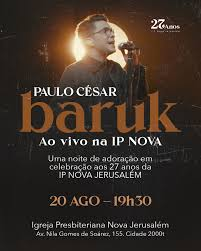

Notícias:
Como parte das comemorações do Aniversário de 27 anos da Igreja Presbiteriana Nova Jerusalém, vamos receber Paulo Cesar Baruk. Reserve na sua agenda!. Será no dia 20 de Agosto de 2022 às 19:30. Não perca a oportunidade de convidar os amigos e familiares a se fazer presente nessa grande noite de louvor e comunhão.
Igreja Presbiteriana Nova Jerusalém. Av: Nila Gomes dos Santos, 155. Cidade 2000. Fortaleza-CE